Ton carnet de douleur, une minute par jour. Et des semaines que tu peux enfin raconter.
OUCH est un carnet de douleur libre et gratuit, pour la fibromyalgie et les autres douleurs chroniques. Tu notes ta journée sur ton téléphone ; ton journal reste chez toi. Petit à petit, il t’aide à voir ce qui t’aggrave et ce qui t’apaise, et à arriver en consultation avec tes semaines en main.
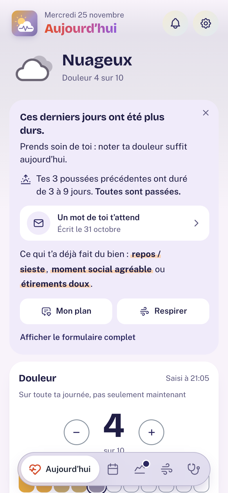
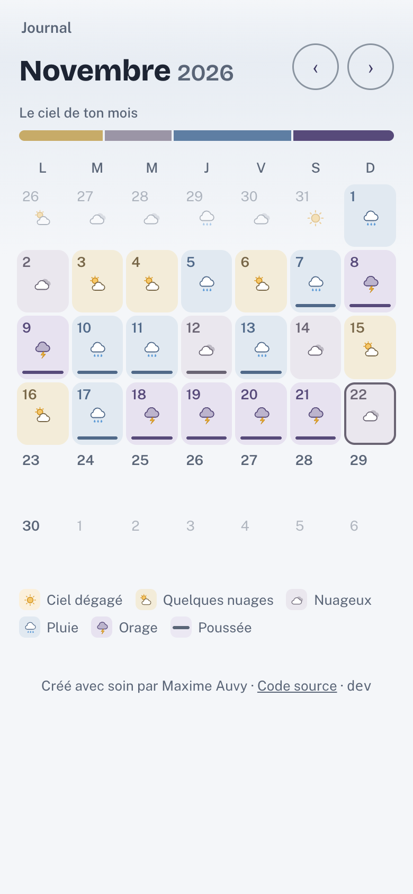
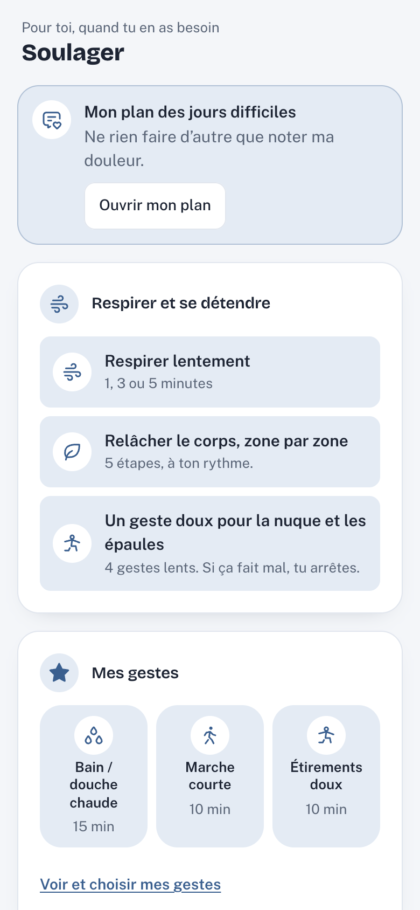
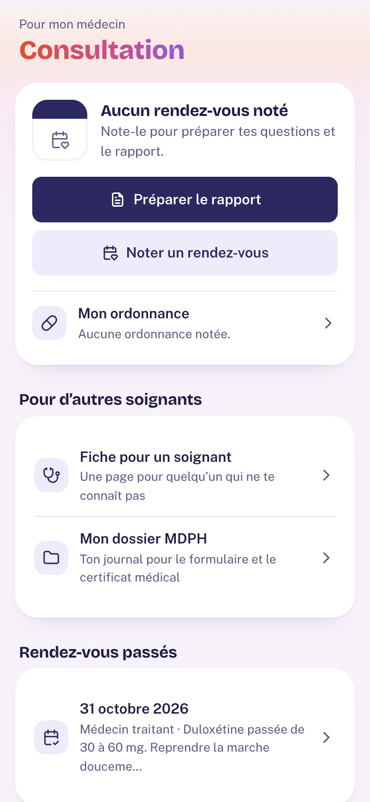
Décrit d’après la version 0.15.0 · 19 novembre 2026. Les captures d’écran viennent du mode démonstration : données fictives. OUCH est un carnet : il ne remplace pas l’avis de ton médecin, ne pose pas de diagnostic et ne recommande aucun traitement. Logiciel libre, licence CeCILL v2.1.
maxauvy.github.io/OUCH
1 · En bref
Pourquoi tenir un carnet, et pourquoi celui-ci
Ce que tu connais sans doute
« Alors, comment ça s’est passé depuis la dernière fois ? » En consultation, il faut se souvenir de plusieurs semaines d’un coup, et ce sont souvent les derniers jours qui prennent toute la place. Les jours les plus durs, ceux que tu voudrais pouvoir montrer, sont aussi ceux où tu n’as pas la force d’écrire.
OUCH est fait pour ces jours-là : de gros boutons, presque rien à remplir, et un écran qui s’allège quand tu vas moins bien. Un chiffre suffit pour que ta journée compte.
Trois promesses
Simple. Ta douleur, de 0 à 10, et c’est noté. Le reste est facultatif : tu ajoutes ce qui t’aide à te comprendre, rien de plus.
À toi. Pas de compte, pas de serveur. Ton journal reste sur ton téléphone, et c’est toi qui décides de ce que tu partages, avec qui.
Honnête. OUCH décrit ce que tu as noté. Quand il relève un rapprochement dans tes notes, il te dit que c’est une piste à regarder, et que c’est à toi de la garder ou de l’écarter.
< 1 minpour noter ta journée
0 €libre et gratuit, sans publicité
0 compterien à créer, aucun mot de passe à retenir pour l’utiliser
Hors ligneune fois installé sur l’écran d’accueil
Ce qu’OUCH fait pour toi
Garder la trace de tes journées, même les plus courtes.
Te montrer l’évolution, et les jours plus difficiles que d’habitude.
Relever ce qui revient les bons jours, et ce qui précède les mauvais.
Te proposer d’essayer une chose une semaine, puis de comparer.
Préparer ta consultation, et un rapport pour ton médecin.
Ce qu’il te laisse décider
Il ne pose aucun diagnostic et ne te dit pas quel traitement prendre.
Il ne te note pas : pas de score, pas de série à tenir, rien à perdre.
Il ne conclut pas à ta place : un rapprochement reste une piste.
Il n’envoie rien sans que tu l’aies demandé.
Quatre lettres, quatre gestes
O · Ouch
Tu notes ta douleur, telle qu’elle est, sans avoir à la justifier.
U · Understand
Tu comprends, à ton rythme, ce qui l’aggrave et ce qui l’apaise.
C · Chart
Tu montres tes semaines, à ton médecin ou à tes proches.
H · Heal
Tu prends soin de toi, avec ce qui t’aide vraiment.
Pour qui ?
Pour toute personne qui vit avec une douleur chronique : la fibromyalgie d’abord, et aussi la polyarthrite rhumatoïde, la spondyloarthrite, le rhumatisme psoriasique, l’endométriose, la migraine, la lombalgie, la sclérose en plaques ou la douleur myofasciale. Tu indiques tes maladies (diagnostiquées ou suspectées), et l’app te propose les mesures les plus utiles pour toi. Tout reste facultatif.
OUCH · guide pour les utilisateurs2
2 · Vue d’ensemble
Quatre gestes, cinq onglets
1
NoterChaque jour, en moins d’une minute : ta douleur, et si tu veux le sommeil, la fatigue, les zones, tes traitements, ce qui t’a aidé.
2
ComprendreTon journal raconte : la courbe, les jours plus durs, l’avant et l’après d’un changement de traitement, ce que tes notes laissent voir.
3
SoulagerUn plan écrit à l’avance pour les jours difficiles, tes gestes avec un minuteur, une respiration lente.
4
PartagerTes questions et un rapport pour ton médecin, une fiche pour un soignant qui ne te connaît pas, ta météo du jour pour tes proches.
Où trouver quoi
Onglet
Ce que tu y trouves
Quand t’en servir
Aujourd’hui
Ta douleur du jour, tes zones, tes mesures, tes traitements, ce qui a aidé, une note ; ta météo à partager ; la page « Enfants »
Chaque jour, une minute. C’est là que l’app s’ouvre.
Journal
Le calendrier du mois, coloré selon la météo de chaque jour
Pour retrouver un jour précis, ou corriger une journée.
Tendances
Ta courbe, ce qui s’est passé, tes zones, tes traitements, ce que tes notes racontent, comparer deux périodes
De temps en temps, quand tu as envie de prendre du recul. Rien ne presse.
Soulager
Mon plan des jours difficiles, mes gestes, respirer lentement, deux exercices de détente
Prépare-le un jour où ça va ; ouvre-le un jour où ça va moins bien.
Consultation
Ton rendez-vous et tes questions, ton ordonnance, le rapport, la fiche pour un soignant
Quelques jours avant un rendez-vous, et juste après.
Réglages
Ton profil, ce que tu suis, le rappel, les suggestions, le verrou, tes sauvegardes, le style
Au début, puis quand tu veux changer quelque chose.
Quand tu vas mal, l’app se fait discrète
Les jours plus difficiles, l’écran se réduit à ta douleur et à un mot gentil. Les pistes, les essais et les bilans attendent que tu ailles mieux. Les autres jours, ce qu’il y a à voir tient en une ligne (« 2 petites choses pour toi »), que tu ouvres si tu en as envie.
Et aussi : français ou anglais, deux styles (« Météo » et « Léger »), chacun en clair ou en sombre, et un texte qui suit la taille de police de ton téléphone.
OUCH · guide pour les utilisateurs3
3 · Commencer
Cinq minutes pour t’installer
1
Ouvre l’adresseSur ton téléphone : maxauvy.github.io/OUCH, ou scanne le code ci-dessous avec l’appareil photo. Rien à télécharger depuis un magasin d’applications.
2
Installe-la sur ton écran d’accueilSur iPhoneOuvre la page dans Safari, touche « Partager », puis « Sur l’écran d’accueil ».Sur AndroidDans le menu du navigateur, cherche « Installer l’application » ou « Ajouter à l’écran d’accueil ».OUCH s’ouvre alors d’un geste, comme une autre app, et fonctionne sans réseau. C’est aussi ce qui protège le mieux ton journal (page 10).
3
Laisse-toi guider, ou passeÀ la première ouverture, un assistant te propose : tes maladies, ton prénom, tes traitements, un rappel. Chaque question peut être passée, et l’assistant se relance plus tard depuis les Réglages.
4
Note ta première journéeTouche ta douleur, de 0 à 10. C’est tout ce qu’il faut.
5
Choisis un rappel, si tu veuxLe plus fiable : un événement dans l’agenda de ton téléphone, qui sonne chaque jour à l’heure choisie, même app fermée. Rien n’est envoyé pour cela.
Tes mesures, rangées pour toi
Selon les maladies que tu indiques, l’assistant range ce que tu peux suivre en trois niveaux : recommandé pour toi, utile aussi, et tout le reste. Tu coches ce qui te parle. Raideur au réveil, réveils à cause de la douleur, gêne dans les gestes, mal de tête, règles… Moins tu en coches, plus la saisie est rapide. Tu pourras en ajouter ou en retirer à tout moment (Réglages).
Juste pour voir ? Essaie avec un exemple
Dans l’assistant ou dans les Réglages, « Découvrir avec un exemple » installe 90 jours fictifs, avec une visite guidée, dans un espace à part : ton propre journal n’est pas touché. « Quitter » efface l’exemple. Tu peux aussi ouvrir maxauvy.github.io/OUCH/?demo.
maxauvy.github.io/OUCH
Sur ordinateur aussi, OUCH s’ouvre dans le navigateur et peut s’installer. Mais ton journal reste sur l’appareil où tu l’as tenu : choisis celui que tu as le plus souvent sous la main, en général ton téléphone.
Ta première semaine
Choisis un moment. Le soir, par exemple, quand la journée est derrière toi. Le rappel t’aide à en faire une habitude.
Commence petit. La douleur seule, puis le sommeil si tu veux. Tu ajouteras le reste quand tu en auras envie.
Laisse venir. Les courbes et les pistes ont besoin de quelques semaines de notes. Il n’y a rien à réussir d’ici là.
OUCH · guide pour les utilisateurs4
4 · Noter ta journée
L’onglet « Aujourd’hui » : une minute suffit
Un jour difficileL’écran s’allège : un mot doux, ce qui t’a déjà fait du bien, ta douleur seule.
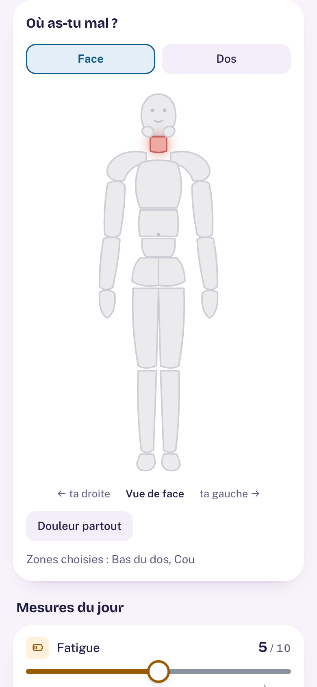
Où as-tu mal ?De face et de dos : une grande région, puis la partie et le côté.
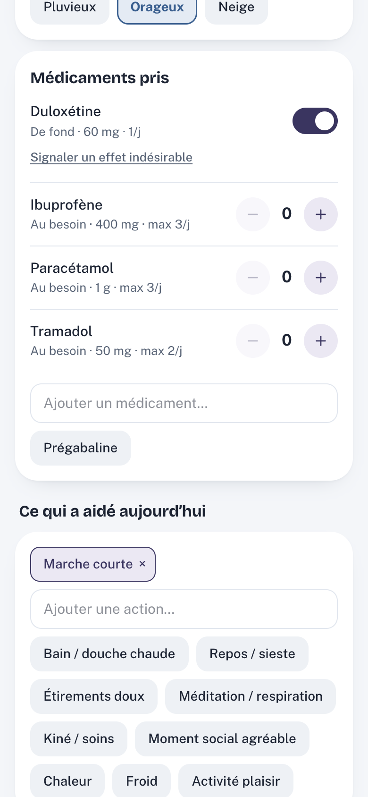
Traitements et ce qui a aidéTon traitement de fond est déjà coché ; tu ajoutes les prises au besoin.
Ce que tu peux noter
Douleur
De 0 à 10, onze cases à toucher. Pense à toute ta journée, pas seulement au moment où tu notes. C’est la seule chose nécessaire.
Zones
Sur une silhouette, 25 zones, à gauche et à droite ; « douleur partout » si c’est le cas.
Mesures
Fatigue, sommeil, stress, brouillard mental, humeur, activité, et celles que tu as choisies.
Traitements
Déclarés une fois. Ensuite : les prises au besoin, le soulagement, un effet indésirable, une dose oubliée.
Ce qui a aidé
Marche courte, bain ou douche chaude, étirements, méditation… ce que toi, tu as repéré.
Si tu veux
La météo du jour (automatique ou à la main), ton cycle, une note libre.
Quelques repères
Un jour oublié n’est pas grave. Il n’est jamais inventé dans les calculs. Si hier n’a pas été noté, l’app te propose d’y revenir, une fois, sans reproche.
Tu peux tout corriger plus tard, depuis le Journal. Une journée écrite après coup est simplement marquée comme telle.
Ton traitement change ? Dis-le dans tes traitements (nouvelle dose, arrêt) : le changement apparaîtra sur ta courbe, et tu pourras voir l’avant et l’après.
Une période plus difficile commence ? Tu peux la noter toi-même, sous la douleur du jour : quand elle a commencé, ce qui a pu y contribuer, un mot. L’écran s’allège, et ton médecin la verra dans le rapport.
Ta météo du jour. Tes mesures se résument en un ciel, du dégagé à l’orage. C’est une image, pas une note : elle dit comment était ta journée, sans la juger.
OUCH · guide pour les utilisateurs5
5 · Comprendre
Journal et Tendances : ce que ton carnet raconte
JournalUn mois à la fois, chaque jour avec sa météo.
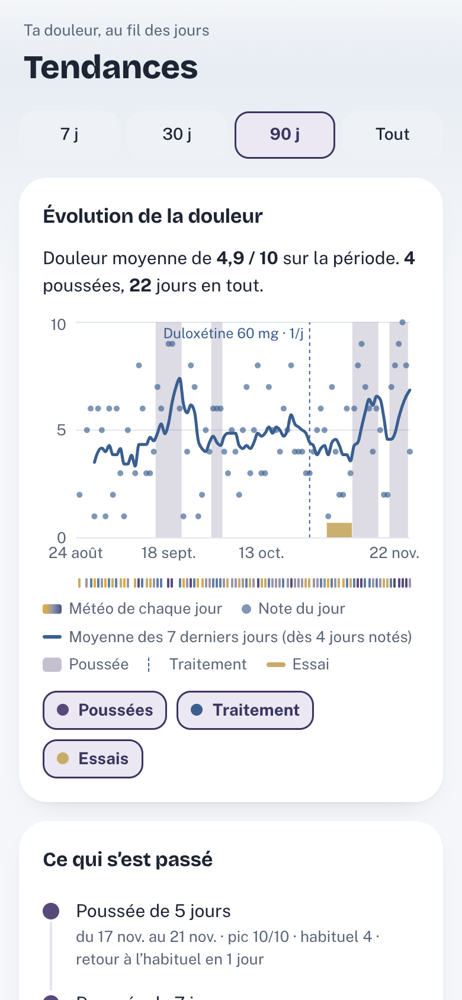
Ta courbeMoyenne sur 7 jours, jours plus durs ombrés, changements de traitement en pointillé.
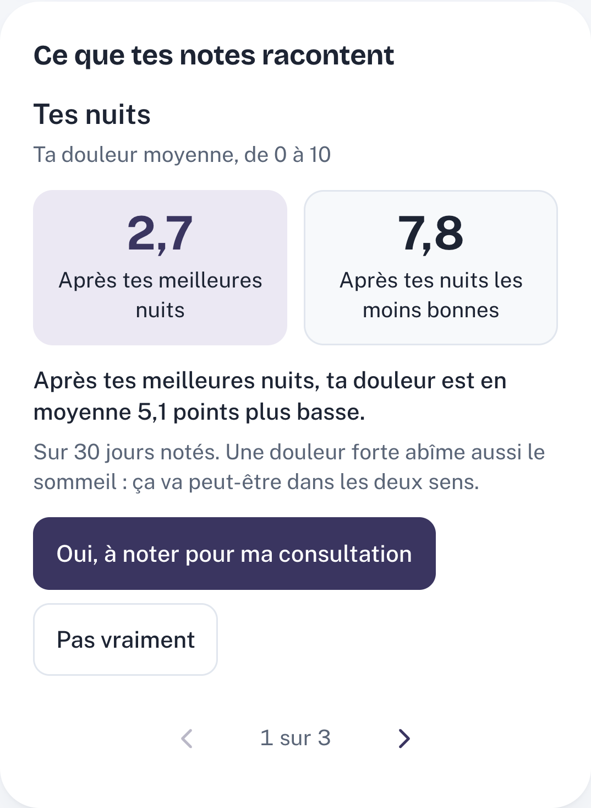
Ce que tes notes racontentUne piste à la fois : tu la gardes, tu l’écartes, ou tu essaies.
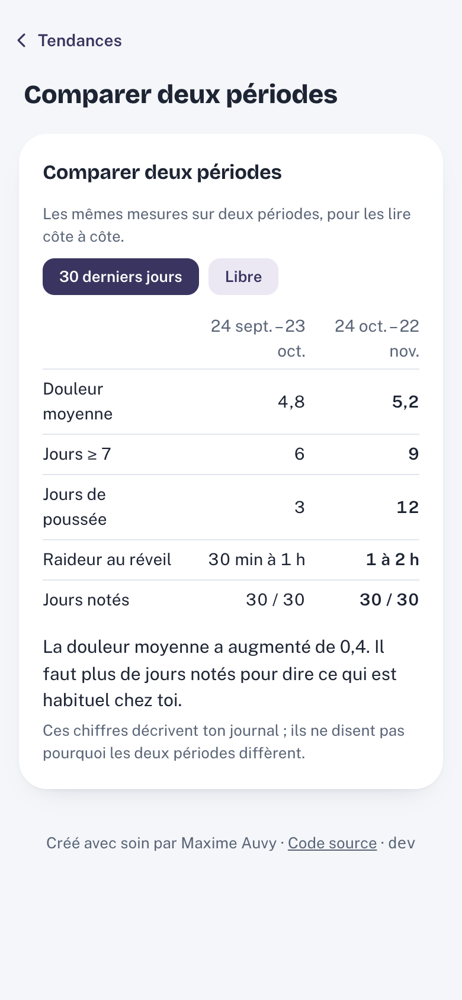
Comparer deux périodesLes mêmes mesures, côte à côte.
Dans Tendances
Pour ma consultation : en haut, l’essentiel à dire à ton médecin.
Ta courbe sur 7, 30, 90 jours ou depuis le début, avec ce qui s’est passé : jours plus durs, changements de traitement, essais.
Tes zones : où tu as eu mal, semaine après semaine.
Tes traitements : ce que tu as pris, le soulagement, les effets notés, et l’avant-après d’un changement de dose.
Les jours de la semaine où ça va le mieux ou le moins bien.
Comparer deux périodes, par exemple depuis ta dernière consultation.
Après tes jours actifs : si les lendemains des jours où tu as beaucoup donné sont plus durs que d’habitude.
Les jours « nettement plus durs que d’habitude » sont ceux où ta douleur dépasse ton niveau habituel pendant au moins trois jours. Dans Tendances et dans le rapport, l’app les appelle « poussées ».
« Ce que tes notes racontent »
Au fil des semaines, l’app peut relever un rapprochement dans tes notes : le sommeil, le stress, l’activité de la veille, ce qui a aidé. Elle te montre les deux moyennes et le nombre de jours, et tu choisis :
Garder pour ta consultation : la piste apparaîtra dans ton rapport.
Essayer une semaine : tu notes la chose les jours où tu peux la faire, sans objectif. À la fin, l’app met côte à côte les jours avec et sans.
« Pas vraiment » : elle est mise de côté, et ne revient que si elle se précise.
Une piste reste une piste. Les jours où tu marches, tu as peut-être moins mal ; ou bien tu marches parce que tu as moins mal. L’app te le rappelle à chaque fois. C’est une idée à regarder, et à discuter avec ton médecin si elle te parle.
Tu préfères ne rien recevoir de tout cela ? Un seul réglage, « Suggestions », coupe toutes les pistes. Et rien ne s’affiche pendant une période difficile.
OUCH · guide pour les utilisateurs6
6 · Soulager
L’onglet « Soulager » : préparé les bons jours, ouvert les mauvais
SoulagerTon plan, respirer et se détendre, tes gestes.
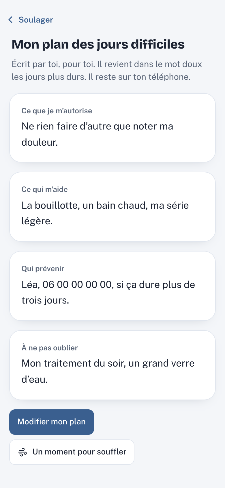
Mon plan des jours difficilesQuatre questions, tes réponses, lues en grand.
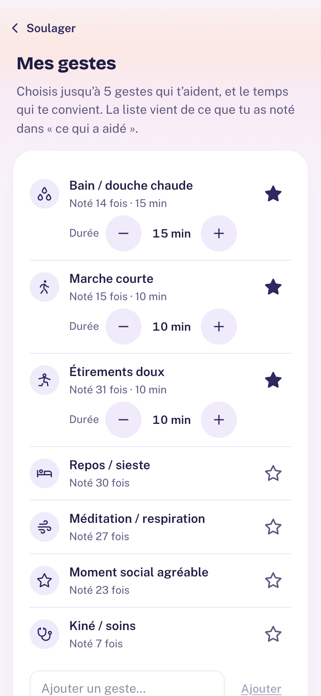
Mes gestesJusqu’à cinq, chacun avec la durée que tu choisis.
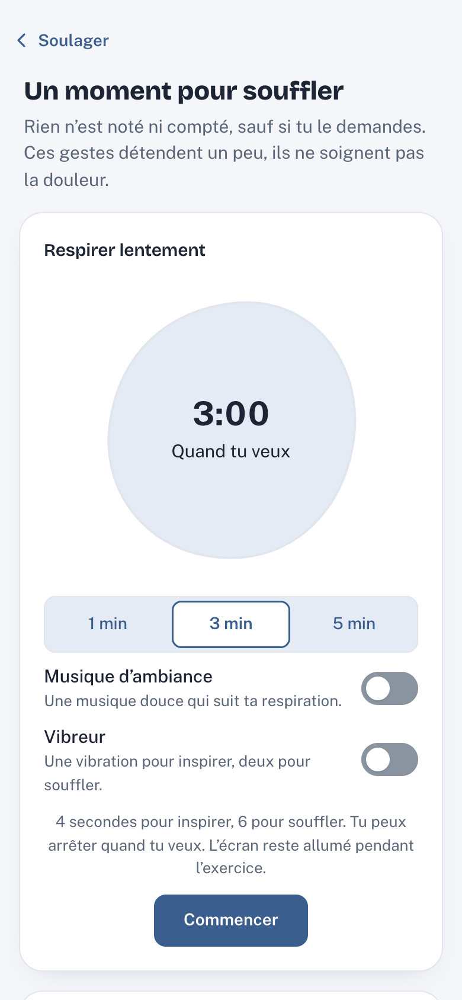
Un moment pour souffler1, 3 ou 5 minutes, sans réseau.
Mon plan des jours difficiles
Un jour où tu te sens assez bien, prends cinq minutes pour répondre à quatre questions : ce que je m’autorise (annuler, me reposer, demander de l’aide), ce qui m’aide, qui prévenir, et ce que je ne dois pas oublier. Le jour où ça va mal, tu n’as plus à réfléchir : tu ouvres ton plan, et tu relis ce que tu t’es écrit. Une version papier est à la fin de ce guide.
Mes gestes
Les choses qui t’aident le plus souvent (bain chaud, marche courte, étirements…), chacune avec un minuteur. C’est toi qui choisis les gestes et leur durée.
Respirer, se détendre
Un niveau d’eau monte et descend : tu inspires quand il monte, tu souffles quand il descend. Vibreur et musique d’ambiance si tu veux. Deux exercices lus pas à pas : relâcher le corps zone par zone, et un geste doux pour la nuque et les épaules.
Dans « Pour toi », de temps en temps
Bouger, ce que disent les études : une fois, ce que des sources reconnues disent de l’activité physique pour ta maladie, avec leurs références. Pour savoir quoi faire et combien, l’app te renvoie à ton kiné ou à ton médecin.
Des prises oubliées : si tu as noté plusieurs oublis d’un traitement de fond, un mot sans jugement, qui évoque un pilulier ou un rappel, et ton médecin ou ton pharmacien.
La pression baisse demain : si tu l’as activé, et seulement si, dans ton carnet, ces jours-là ont été plus durs pour toi.
Une période qui se termine : l’app le remarque en une phrase douce.
Pour être franc : ces gestes peuvent détendre un peu, mais ils ne soignent pas la douleur, et l’écran le dit. Il n’y a ni score ni série : un jour sans exercice ne compte pour rien. Si un geste te fait mal, arrête-le et parles-en à un professionnel.
Fiche pour un soignantUne page pour quelqu’un qui ne te connaît pas.
Le rapportPage 1 de la version médecin traitant (données fictives).
Avant, pendant, après
1
AvantNote la date du rendez-vous, tes questions, et ce dont tu veux parler en premier. Quinze jours avant, une carte douce te le rappelle.
2
PendantMontre ton rapport sur l’écran, ou imprime-le. Tes questions sont en tête : tu ne les oublieras pas devant la porte.
3
AprèsÉcris ce que ton médecin t’a dit. Si une ordonnance t’a été remise, note sa durée : l’app te prévient une semaine avant la fin (ou deux, au choix).
La fiche pour un soignant
Pour les urgences ou un nouveau médecin : tes maladies, tes traitements, les effets indésirables notés, ta douleur habituelle, ce qui te soulage. Tu y ajoutes toi-même tes allergies et des personnes à joindre. À montrer, imprimer ou enregistrer en PDF, en français ou en anglais.
Le rapport : quelle version choisir ?
Onglet Consultation › « Préparer le rapport ». Il couvre la période depuis ta dernière consultation, et la compare à la même durée juste avant.
Médecin traitant
Centre douleur
Longueur
3 à 5 pages
6 à 10 pages
Pour qui
Ton généraliste, un rhumatologue, une consultation courte
Un centre ou une consultation douleur, un suivi détaillé
Dans les deux
Ta douleur et son évolution, tes traitements, tes questions, les pistes que tu as gardées et tes essais
Le rapport décrit ce que tu as noté, sans l’interpréter : c’est ton médecin qui en tire des conclusions, avec toi. Il est fabriqué sur ton téléphone ; le nom que tu y tapes n’est pas enregistré.
Si ton médecin ne connaît pas OUCH, une fiche d’une page, « Lire un rapport OUCH », l’aide à lire son premier rapport.
OUCH · guide pour les utilisateurs8
8 · Tes proches
Dire comment tu vas, sans tout expliquer
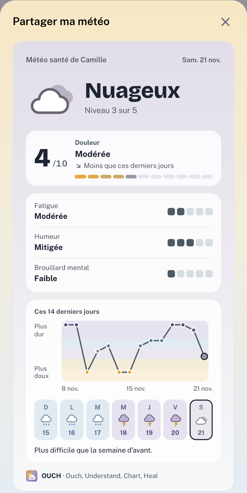
Ta météo du jourUne image, un petit mot, et tu l’envoies toi-même.
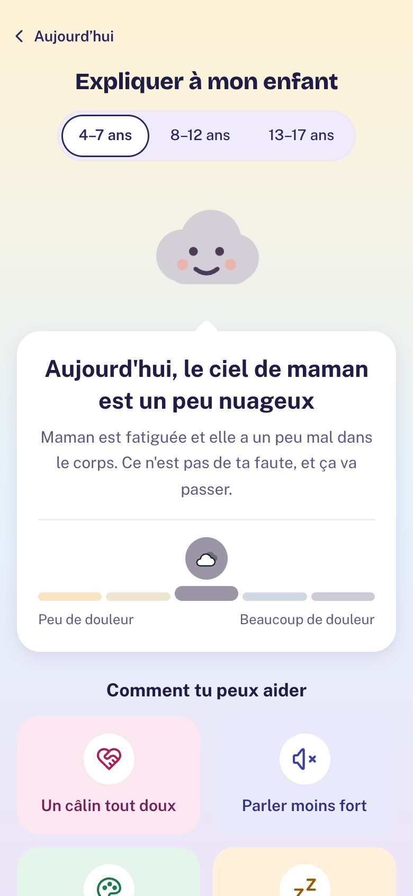
Expliquer à ton enfantDes mots simples, pour trois âges.
Ta météo du jour, à partager
Il y a des jours où l’on n’a pas envie de raconter. Depuis l’écran Aujourd’hui, OUCH résume ta journée en une image : ciel dégagé, voilé, nuageux, pluie ou orage, avec ta douleur, ta fatigue et ton humeur. Tu peux y ajouter un mot (« Je me repose, appelle-moi demain »), puis l’envoyer par message à qui tu veux. Rien ne part sans que tu le choisisses.
La page « Enfants »
Faite pour être montrée à ton enfant. Elle raconte ta météo avec des mots à sa hauteur (« aujourd’hui, le ciel de maman est un peu voilé »), propose des idées pour aider, et explique ta maladie selon son âge : 4 à 7 ans, 8 à 12 ans, 13 à 17 ans. Tu choisis « maman » ou « papa ».
Qui voit quoi : c’est toi qui choisis
Avec qui
Ce que tu peux partager
Comment
Ton médecin
Le rapport (3 à 5 ou 6 à 10 pages)
Sur l’écran pendant la consultation, imprimé, ou en PDF que tu envoies toi-même.
Un soignant qui ne te connaît pas
La fiche d’une page
À montrer sur l’écran, imprimer ou enregistrer en PDF.
Tes proches
Ta météo du jour, avec un mot
Une image que tu envoies par message.
Ton enfant
La page « Enfants »
Tu la lui montres sur ton téléphone.
Personne d’autre
Tout le reste
Ton journal, tes notes, tes pistes restent sur ton téléphone.
En accès anticipé : ta météo, chaque jour, toute seule
Si tu as activé la sauvegarde vers Dropbox, ta météo du jour peut partir d’elle-même, chiffrée, dès que ta journée est remplie. Ton proche scanne une fois un code que tu lui montres, et la regarde quand il veut dans OUCH Duo, une petite app faite pour lui. Il n’est pas prévenu, et tu coupes tout d’un geste : le lien ne mène alors plus nulle part. Toute personne qui a ce code voit ton image du jour : ne le donne qu’à des gens de confiance.
Une idée : la météo du jour est souvent plus facile à envoyer qu’un long message. Elle dit « aujourd’hui, c’est dur » sans que tu aies à te justifier, et tes proches savent comment ajuster.
OUCH · guide pour les utilisateurs9
9 · Tes données
Ton journal est chez toi : garde-le à l’abri
Où il est
Dans le navigateur de ton téléphone, et nulle part ailleurs : pas de compte, pas de serveur. Personne d’autre que toi n’y a accès à distance, ni le développeur d’OUCH.
Ce qui peut le faire disparaître
Perdre ou changer de téléphone, vider les données du navigateur, ou un navigateur qui fait de la place. Safari efface même les sites non installés après une semaine sans visite : installe OUCH sur l’écran d’accueil.
Ce qui le protège
Une sauvegarde : un fichier chiffré avec un mot de passe que tu choisis, à ranger où tu veux. L’app te rappelle d’en faire une quand ton journal a changé.
Faire une sauvegarde
1
Réglages › Mes donnéesTouche « Exporter une sauvegarde ».
2
Choisis un mot de passeNote-le en lieu sûr. OUCH ne le connaît pas : sans lui, la sauvegarde ne peut pas être ouverte, par personne.
3
Range le fichierSur iPhone, « Enregistrer dans Fichiers » (dans iCloud Drive, par exemple). Ailleurs : ton cloud personnel, ou un e-mail à toi-même.
Changer de téléphone
Installe OUCH sur le nouveau, puis Réglages › Mes données › « Importer une sauvegarde », et ton mot de passe.
En accès anticipé, et désactivée par défaut : une sauvegarde automatique du même fichier chiffré vers ton Dropbox. L’export CSV, lui, est en clair : il sert à analyser tes données, pas à les restaurer.
Un verrou, si d’autres utilisent ton téléphone
Réglages › Verrouillage : un code à quatre chiffres cache OUCH après une minute. Il cache l’écran, il ne chiffre pas ton journal. OUCH ne garde pas ton code : si tu l’oublies, il faudra effacer l’appareil et restaurer une sauvegarde.
Ce qui sort de ton téléphone
Ce que tu envoies toi-même : un rapport, une fiche, ta météo du jour, une sauvegarde.
La météo automatique, si tu l’actives : ta position est envoyée au service météo Open-Meteo, et une position arrondie à OpenStreetMap pour le nom de ta ville.
Un signal « actif cette semaine », une fois par semaine, sans aucune donnée de santé ni identifiant, pour savoir combien de personnes utilisent OUCH. Une case des Réglages le coupe.
Le détail de ce que chaque service reçoit est dans la politique de confidentialité d’OUCH, sur la page du projet (fichier PRIVACY.md).
Si tu perds ton téléphone
Ton journal part avec lui : c’est pour cela que la sauvegarde compte. Avec ta dernière sauvegarde et son mot de passe, tu retrouves tout sur un nouveau téléphone, jusqu’au jour de cette sauvegarde.
Si tu veux arrêter
Réglages › Mes données › « Supprimer mes données » efface tout de cet appareil, définitivement. Les sauvegardes que tu as exportées restent là où tu les as rangées : supprime-les toi-même si tu n’en veux plus.
OUCH · guide pour les utilisateurs10
10 · Questions fréquentes
Ce qu’on se demande souvent
Je n’ai pas noté depuis une semaine. Est-ce que c’est fichu ?
Pas du tout. Les jours manquants restent vides, rien n’est inventé, et tout ce que tu as noté reste utile. Tu reprends quand tu veux. Pour la veille, l’app te propose d’y revenir ; pour les jours plus anciens, passe par le Journal.
Je ne sais jamais quel chiffre mettre.
Il n’y a pas de bonne réponse. Ce qui compte, c’est d’utiliser l’échelle à ta façon, de la même façon d’un jour à l’autre. Pense à ta journée en entier, pas seulement au moment où tu notes.
Combien de choses dois-je suivre ?
Le moins possible pour que ça reste facile. La douleur suffit. Ajoute une ou deux mesures qui te parlent (le sommeil, souvent), et retire celles que tu ne remplis jamais.
Tenir un carnet, ça ne va pas me faire penser à ma douleur tout le temps ?
C’est une vraie question, et elle n’a pas encore été étudiée. OUCH est fait pour prendre une minute, pas plus. Si ça te pèse, coupe les suggestions, note moins souvent, ou fais une pause : ton journal t’attendra.
Je ne suis pas à l’aise avec mon téléphone.
Une personne de confiance peut t’aider à l’installer et à passer l’assistant. Ensuite, il n’y a qu’un chiffre à toucher chaque jour ; le reste peut attendre, ou ne jamais servir.
L’app me montre une piste. Dois-je changer quelque chose ?
Rien ne t’y oblige. Une piste est une idée tirée de tes notes. Si elle te parle, tu peux l’essayer une semaine, ou la garder pour en parler à ton médecin. Pour un traitement, ne change rien sans lui.
Mon médecin n’a jamais entendu parler d’OUCH.
Le rapport se lit sans connaître l’app. Tu peux aussi lui laisser « Lire un rapport OUCH » (une page) ou la plaquette pour les soignants.
Est-ce que quelqu’un peut lire mon journal ?
À distance, non : il n’est envoyé nulle part. Mais quelqu’un qui a ton téléphone déverrouillé en main peut l’ouvrir : le verrou par code est là pour ça.
OUCH est gratuit. Où est le piège ?
Il n’y en a pas : pas de publicité, pas de revente de données, et rien à revendre puisque rien n’est collecté. OUCH est un logiciel libre, son code est public. Après quinze jours de journal, une carte discrète, tout en bas des Réglages, propose de soutenir le projet par un don ; rien n’est débloqué en échange.
Puis-je l’utiliser sur mon téléphone et sur ma tablette ?
Ton journal vit sur un seul appareil : les deux ne se synchronisent pas. Une sauvegarde permet de le déplacer de l’un à l’autre, mais le plus simple est d’en choisir un.
Ce qu’OUCH ne remplace pas
OUCH est un carnet. Il ne pose pas de diagnostic, ne recommande aucun traitement et ne surveille pas ta santé : personne ne regarde ce que tu notes. Si ta douleur change de nature, si un symptôme nouveau t’inquiète, ou si tu ne vas pas bien moralement, parles-en à ton médecin sans attendre ton prochain rendez-vous. En cas d’urgence, appelle le 15 ou le 112. Si tu as des idées suicidaires, le 3114 répond jour et nuit, gratuitement.
OUCH · guide pour les utilisateurs11
Annexe · À détacher et à garder
Mon plan des jours difficiles, sur papier
À remplir un jour où ça va. Tu peux recopier tes réponses dans OUCH (Soulager › Mon plan), ou garder cette page sur ton frigo.
Ce que je m’autorise
Annuler, me reposer, dire non, demander de l’aide…
Ce qui m’aide
Un bain chaud, une marche courte, une série, un appel…
Qui prévenir
Un prénom, un numéro, ce que je peux lui demander.
À ne pas oublier
Mon traitement au besoin, boire, manger un peu, ce n’est qu’une période…
Avant ma prochaine consultation
J’ai noté la date dans l’onglet Consultation.
J’ai écrit mes questions, et ce dont je veux parler en premier.
J’ai regardé les pistes que j’ai gardées.
J’ai préparé le rapport : médecin traitant ou centre douleur.
Je sais quand finit mon ordonnance.
Après la consultation
J’ai écrit ce que mon médecin m’a dit.
J’ai noté un changement de traitement, s’il y en a un.
J’ai noté la durée de ma nouvelle ordonnance.
Une fois par mois
J’exporte une sauvegarde (Réglages › Mes données).
Mon mot de passe de sauvegarde est rangé en lieu sûr.
Les phrases à garder
« Un chiffre suffit. » · « Un jour oublié n’est pas grave. » · « Une piste n’est pas une preuve. » · « C’est moi qui décide de ce que je partage. »
OUCH · guide pour les utilisateurs · maxauvy.github.io/OUCH12
 maxauvy.github.io/OUCH
maxauvy.github.io/OUCH